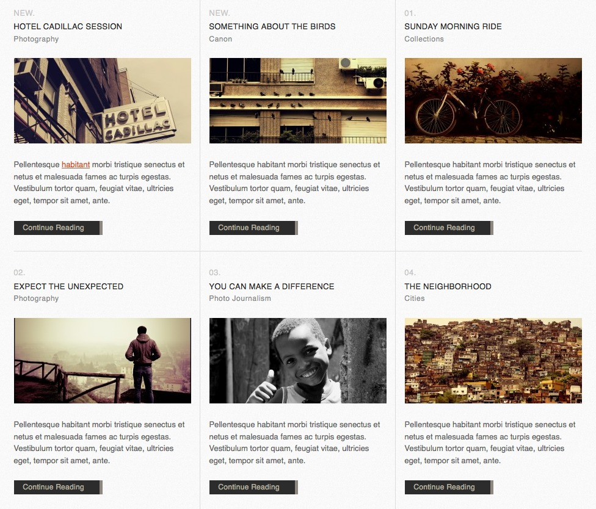

“Hand Crafted” Documentation by “Ernesto Méndez”
Created: 12/15/2010
By: Ernesto Méndez
ThemeForest Profile
Thanks for your purchase! If you have
any questions that are beyond the scope of this document, please send
me an email via my ThemeForest Profile.
Table of Contents
- Configuring the Homepage
- Adding Social Icons
- Setting up the Menu
- Choosing the Slideshow Manager
- Setting up the Nivo Slider
- Setting up the Piecemaker Slider
- Showing/Hiding the Quote/Twitter section
- Configuring Homepage Posts Display
- Tweaking the Homepage Posts's Layout Options
- Configuring the Portfolio
- Adding Portfolio Posts & Pages
- Portfolio Page Layouts
- Configuring the Blog
- Choosing a Blog Layout
- Configuring the Blog Posts Display
- Tweaking the Blog's Layout Options
- Shortcodes
- Information Boxex, Download & Buttons
- Image Galleries
- Using the Flickr Widget
- Tweaking the Theme's Typography
- Importing/Exporting Settings
- Translating the Theme
- Theme's Files
- Credits & Resources used
A) Configuring the Homepage top
You can configure various options in the theme's Homepage:
- Logo & Positioning
- Navigation Menu
- Slideshow Manager
- Homepage Quote/Twitter Section
- Homepage Posts Display
To Change the Logo, go to the Hand Crafted Theme Options page, and switch to the General Tab. Locate the Logo Image option, and click on the Upload Image button, to browse & upload your image.
You can then change the logo positioning with respect to the header. You can align it to the center, right or left sides of the header.
B) Adding Social Icons top
You can add many social icons into your Site's Topbar. The image
below shows the Topbar:
To configure your Social Icons, go to the Social
Networks Options
Page. On that page, you will find the configuration interface that
allows you to add multiple links for the different Social Networks you
want to add.
To specify the amount of Social Networks to be displayed, switch to the
Configuration Tab, and
specify the Number of Social Links
to Display. After you do so, click on the Refresh to Update button, to reload
the Options Page.
The Social Networks configuration entries, look like the following:
After you have configured the Social Networks to Display, switch
back to the Social Networks
tab. To Configure each social link, perform the following steps:
- Type the Name of your Social Network
- Choose the Icon for your Social Network
- Paste the URL of your Profile
C) Setting up the Menu top
You
can
tweak
the Navigation Menu's Setttings in the Typography
Options Page. On that page, you can do the following:
- Change the menu items horizontal separation
- Set the Font & Size of the navigation menu items
- Set the Font & Size of the dropdown menu items
Using the WordPress 3.0 Menu Manager
Hand Crafted allows you to create your Navigation Menu in Two Ways:
- Using Pages (default option)
- Using the WordPress Menu Manager (recommended)
It is very important to mention, that the default navigation option, by creating pages, does not allow you to have much flexibility when it comes to adding custom content to your site's navigation. It is limited only to pages. (as opposed to the menu manager, which allows a variety of data).
To enable the Menu Manager, on the Appearance » Menu options page, choose the Navigation menu from the dropdown, as seen in the image below:
After you have selected the Navigation menu you want to use for your Theme's main navigation, you can click on Save Menu, further to the right.
Doing this will automatically switch from the default pages menu, to the much powerful and flexible WordPress Menu Manager.
D) Choosing the Slideshow Manager top
HandCrafted
Provides
Two
Slideshow Managers:
- Nivo Slider
- Piecemaker 3D
To configure the Nivo Slider, go to the Nivo Slider Options Page, located under the Hand Crafted menu.
To configure the Piecemaker 3D Slider, go to the Piecemaker 3D Options Page, located under the Hand Crafted menu.
E) Setting up the Nivo Slider top
The Nivo Slider has many options for you to configure. Here's how
the Nivo Slider looks like:
You can set the Nivo Slider options
under
the
Hand Crafted
menu, on the Nivo Settings
Theme Options Page.
Note: You can only have a maximum of 10 items
when using the Nivo Slider, for Layout reasons.
F) Setting up the Piecemaker Slider top
Hand Crafted provides an alternate Slider, which is the Piecemaker
slider. It displays your images using a slicing cube which rotates to
compose the next image. Really amazing 3D Effects using Flash.
Here's how Piecemaker 3D looks like:
You can set the Piecemaker 3D options,
under
the
Hand Crafted menu,
on the Piecemaker 3D Theme
Options Page.
G) Showing/Hiding the Quote/Twitter section top
Hand
Crafted
provides
Two Sections for you to use:
- Custom Quote
- Live Twitter Feed
Here's how the default Quote section looks like:
Here's how the Twitter Section looks like:
To Configure the section to the Hand Crafted Theme Options page, and then switch to the Homepage Tab. Scroll to the Bottom and you will find the options to configure the section:
- Homepage Teaser: Choose whether to display the Twitter Feed, Quote or not to display at all
- Homepage Rounded Icon Destination: Choose whether to show your Twitter Profile, or your Quote
- Homepage Quote: Enter your Quote on the text field.
H) Configuring Homepage Posts Display top
The
Homepage
has
the flexibility of holding lots of
content while keeping it organized in an elegant Grid, as seen in the
image below:

By Default, the Homepage only shows 3 posts. You can set any number to
display, as long as it is a multiple
of
Three.
To configure the Homepage Options, on the Hand
Crafted Theme Options Page, switch to the Homepage Tab. There you will find
many options that will help you configure your Homepage:
- Homepage Posts per Page: Select the amount of Posts to display on the Homepage. Multiple of 3
- Exclude Posts from the Following Categories: Select the categories you want to exclude from the Homepage. The Posts in these categories won't be shown.
- Only Show Posts from the Following Categories: This setting will only display posts from the categories you select. It will ignore the settings you have defined on the Exclude Posts option.
- Recent Posts to be Marked as "New":
Hand
Crafted's design provides a numbered organization of content. Also
allows you to consider some content as new, to be more attractive to
the readers of your site. This setting allows you to define how many
posts should be treated as New.
I) Tweaking the Homepage Posts's Layout Options top
You can change the default height
of the thumbnails of the Homepage Layout (as well as on multiple
sections of your site). This allows lots of flexibility, since you can
specify exactly how you want your images to be displayed, without being
limited by the theme's design or layout.
To set the new height, go to the Hand Crafted menu,
and click on the Layout Options
options page. There you will be able to change the default height for
your Homepage's Post Thumbnail images.
You can change the size of the thumbnails by using the Homepage Posts Thumbnail Height option.
If you want to Preserve
the Aspect Ratio of your images, set the value to -1 and the
images will fit the layout, without being cropped.
J) Configuring the Portfolio top
The Portfolio in Hand Crafted is built using Two Custom Post Types:- Portfolio Pages
- Portfolio Posts
The Portfolio Pages contain a group of Portfolio Categories, which organize Portfolio Posts. So, you add content to your Portfolio Pages, by telling them which posts to display from each category. The image below shows an example of the Portfolio Pages Configuration Options panel:
In the image above, the Portfolio Page will display posts from the Canon, Environment, Photography and Places. All the posts categorized under those terms, will be displayed on the Portfolio Page.
Portfolio Posts
These are the building block for the Portfolio Pages. You can organize them using Categories. It is very important to know that the Categories used for the Portfolio Posts, are not the same as the Categories used for the normal Posts.
The image below shows the Configuration Interface for the Portfolio Posts:
K) Adding Portfolio Posts & Pagestop
When you are adding content to your Portfolios, you need to create
the base structure of the content in your WordPress backend. Here's a
list of steps to help you in the Process of publishing content into
your Portfolios:
- Create the Portfolio Categories you will use later to organize your Portfolio Posts
- Publish your Posts using the Portfolio Categories you have created in step 1. You can also create the categories when you are writing your posts
- Create your Portfolio Pages, and specify which Layout you want to use, as well as the Portfolio Categories to use when displaying content.
The structure of your post will depend on the Layout you want to use. For example, since the Single Column Layout displays Slideshow Galleries of Every Post, so you need to structure the content accordingly.
The Portfolio Slideshow for the Single Column Layout will take the following to create the slideshows:
- Images you have inserted into the post
- Images from WordPress Galleries inserted into the post
- Images inside links
- Images that you specify with the hc_gallery shortcode, provided by Hand Crafted
L) Portfolio Page Layouts top
Hand Crafted provides you with multiple Portfolio Layouts, which you
can use for lots of different purposes:
- Single Column Layout: Allows you to have a Slideshow Gallery generated for you, from the images inside every post. Also allows using Videos from Youtube/Vimeo, and also Quicktime movies (.mov)
- Two Columns Layout: Displays the Posts in a Gallery Fashion, in which all thei mages have a lightbox assigned. You can also view the videos in the lightbox.
- Three Columns Layout: Same as the Two Columns Layout, but with Three Columns
Single Column Layout
All the images you add into the posts being displayed in this page, will be used to create a slideshow gallery.

Two Columns Layout
Here's how the Two Columns Layout looks like:
Three Columns Layout
Here's how the Three Columns Layout looks like:
M) Configuring the Blog top
To Configure your Blog, go to the Hand Crafted menu,
and switch to the Blog Tab.
There you will be able to configure the options for your Blog.
First, you need to create a Blog Page. You can
do so by clicking on the Create Page
button, and specifying a name for your Page. This page will be
automatically assigned to your Blog
Page option.
N) Choosing a Blog Layout top
Hand Crafted provides Two Blog Layouts for you to choose. You can
choose your desired layout, by going to the Hand Crafted
Theme Options Page, and then going to the Blog Tab. Select the layout from
the Blog Layout option.
The image below shows normal layout:
The image below shows the Full Width Blog Layout:
O) Configuring the Blog Posts Display top
You have 3 ways of displaying the Posts on your Blog. Each setting
differs on the way it shows the Post Image:
- Fixed Height Thumbnails: All the images will be automatically cropped to fit a specific size
- Auto Height Thumbnails: This allows your images to keep their aspect ratio, while adjusting to the layout.
P) Tweaking the Blog's Layout Options top
To have Fixed Height Thumbnails,
you
need
to specify a Blog Post
Images Height under the Layout Options.
Go to the Hand Crafted menu,
and click on Layout Options. There
you
will
find the Blog Posts
Thumbnail Height, which is available for both the Normal &
Full Width Layout.
To have Auto Height Thumbnails,
you
can
set the Blog Posts Thumbnail
Height option to -1. This will preserve your image's Aspect
Ratio, while adjusting to the layout.
Q) Shortcodes top
A shortcode is a WordPress-specific code that lets you do nifty
things with very little effort. Shortcodes can embed files or create
objects that would normally require lots of complicated, ugly code in
just one line. Shortcode = shortcut.
You can find more information about Shortcodes in the WordPress support
website.
R) Information Boxex, Download & Buttons top
Hand Crafted Provides various Shortcodes for you to use when publishing your content:
Button
To add a button to your site, you can use the [button] shortcode. The following
code creates the button that you can see in the image below
[button url="#button"] Button [/button]
You can set the following options to for the Button shortcode
(underlined values are defaults):
display
= (inline/block)
target = (default/blank)
Setting display to 'block' will make the button occupy all the space
horizontally. By default, all buttons are placed next to each other
horizontally.
Setting target to 'blank' will open the link on a new page/tab. By
default, all buttons open in the same page.
Download Box
To add a download box to your site, you can use the
[download] shortcode. The
following code creates the box that you can see in the image:
[download url="#download-box"] This is a
Download Box [/download]
Info Box
To add an info box to your site, you can use the [info] shortcode. The following
code creates the box that you can see in the image:
[info] This is an Information Box [/info]
Warning Box
To add an warning box to your site, you can use the
[warning] shortcode. The
following code creates the box that you can see in the image:
[warning] This is a Warning Box [/warning]

Note Box
To add a note box to your site, you can use the [note] shortcode. The following
code creates the box that you can see in the image:
[note] This is a Note Box [/note]
S) Image Galleries top
Hand Crafted provides a simple yet effective way to create
Galleries, as an alternative to the native WordPress gallery shortcode.
The advantages of the Hand Crafted Image galleries, is that they
expand to fit the layout's dimensions, depending if you have chosen to
use the Normal Layout, or the Full Width layout for a given post or
page.
Here is how the Hand Crafted built-in galleries look like:
- One Column
- Two Columns
- Three Columns
All Hand Crafted galleries have a lightbox automatically assigned to them.
If you switch the layout for a Post or Page, the thumbnails will change sizes accordingly, depending on the Layout. You don't need to modify any of the settings, they will be automatically adjusted.
If you want the height to resize proportionally to the width of the images, you can omit the height attribute on the shortcode.
T) Using the Flickr Widget top
Hand Crafted provides you with a Flickr
Widget, to add Flickr Galleries into your Site's sidebar.
Each widget can be configured using the settings seen below:
You can add as many widgets as you want to your site.
U) Tweaking the Theme's Typography top
Hand Crafted allows you to tweak its typography by using Fonts from
the Google Fonts Directory.
You can change the fonts for virtually everything in the theme, such
as:
- Navigation Menu Font
- Dropdown Menu Font
- Page Titles Font
- Secondary Font
- Body Font
Important: If you increase the Base Font Size, the theme's typography will increase proportionally, starting from the Base Font Size you specify. Please have this in mind when making changes to the typography.
Adding Fonts from the Google Fonts Directory
You can add any font provided by the Google Fonts Directory. To do so, you can perform the following steps to correctly embed the fonts into your site.
- Go to the Hand Crafted menu, and click on Typography
- Switch to the Typography Tab
- Click on the Browse Fonts Button.
This
will
open the Google Fonts Directory in a new Window
- Click on the Font you want to use. This will load the Font's details page
- Click on Use This Font, located on the right hand side of the Font page
- Select the Variants you want to include for the Font (if available)
- Copy the Embed Code.
- Paste the Embed Code into the Option that requires an Embed Code to load your Font
- Save your Settings
The Typography options page, provides you with an Advanced Section (accessed via the Advanced Tab), which allows you to add extra fonts to your site, and tweak them manually.
This option requires programming knowledge, and it is recommended that you know what you are doing, prior to adding fonts & styles using the Advanced Section.
V) Importing/Exporting Settings top
Hand Crafted is based on a robust framework, created by der/Design.
This
allows
the theme to inherit all the powerful options the framework
provides, such as Importing and Exporting settings from one
installation to another.
To backup/restore your settings, go to the Hand
Crafted menu, and click on Import/Export. This will open up
the Import/Export Options page, as seen below:
If you're working on your site on a test server, and you later on want to migrate the theme and its data to a new server/location, you can use the Import/Export feature to help you with the theme configuration tasks. This saves you lots of time configuring Hand Crafted.
To Backup your settings, simple click on the Get Backup Code button, and it will generate the backup code for the options you have currently stored. Save this code into your computer on a text file, so you can access it later on.
Restoring your Settings
To Restore your settings from a previously made backup, paste the Backup Code you have obtained earlier, into the Import Settings field, then click on the Import Settings Button.
This will restore all your settings to the state they were when performing the backup.
Each options page in the Hand Crafted menu, has its own Reset button, that resets all the options pertaining to the current options page you are currently in.
The Global Reset option will reset All the option pages to their default values.
W) Translating the Theme top
Hand Crafted provides a very easy way to translate the strings used
by the theme. To do so, on the Hand Crafted menu,
click on the Translate Theme
option, and it will present you with the translation interface.
You are presented with an initial string, and the override below, so
you can modify the actual contents of the string on the fly, without
having to edit translation files.
To Translate a string, just replace the value below the label, and then save your settings, or press the Enter key.
The Image below shows the translation interface:
X) Theme's Files top
If you're customizing the theme, you can Download
the
PSD
Files, so you can make more in depth modifications to the
layout and all of the theme's elements.
CSS
Files
The CSS Files are located on the core/css
directory, which contains the following files:
- blueprint.css - The
Blueprint Framework
- core.css - Layout
Styles
- menu.css - Menu
Styles
- comments.css - WordPress
Comments
Styles
- galleries.css -
Hand Crafted Galleries Styles
- widgets.css - WordPress
Widget
Styles
- print.css - Print Styles
- ie.css - Internet
Explorer Overrides (all versions)
- ie7.css - Internet Explorer 7 Overrides
- ie8.css - Internet Explorer 8 Overrides
JavaScript Files
The JavaScript Files are located on the core/js directory, which contains the following files:
- ie.js - Internet Explorer specific code
- jquery.autoresize.min.js - jQuery Autoresize plugin
- jquery.base64.js - jQuery Base 64 plugin
- jquery.cookie.js - jQuery Cookie plugin
- jquery.easing.js - jQuery Easing plugin
- jquery.form.js - jQuery Form plugin
- jquery.swfobject.min.js - jQuery SWF Object plugin
- jquery.twitter.js - jQuery Twitter plugin
- jquery.validate.pack.js - jQuery Validate plugin
- lib.js - Common Libraries/Functions for Hand Crafted
- core.js - Hand Crafted's main JavaScript file
Y) Credits & Resources Usedtop
Hand Crafted makes use of different Open Source Web Technologies and Resources:
JavaScript
Libraries/Plugins
Below is the list of JavaScript Libraries used:
- jQuery
- Nivo Slider
- jQuery AutoResize plugin
- jQuery Base 64 plugin
- jQuery Cookie plugin
- jQuery Easing Equations plugin
- jQuery Form plugin
- jQuery SWF Object plugin
- jQuery Validate plugin
The following Flash Libraries were used:
Stock Photography
Images licensed under a Creative Commons license, were used from the following Flickr users:
Stock Icons
The following icons were used on the theme's design:
Fonts
The following fonts were used on the theme's logo design:
Copyright © 2010, der/Design